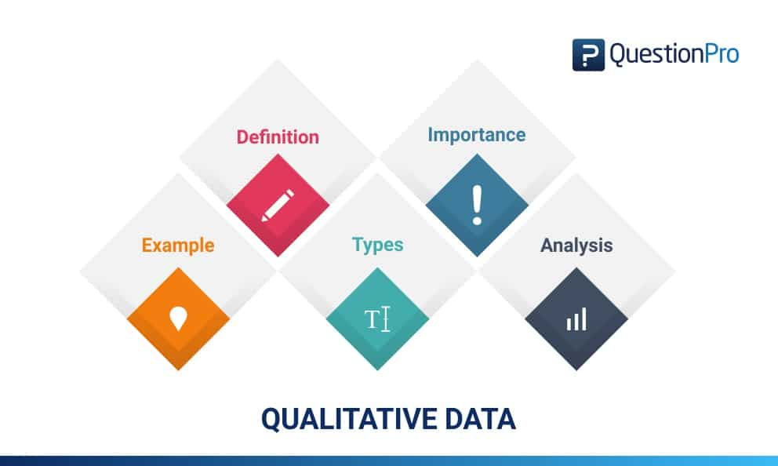
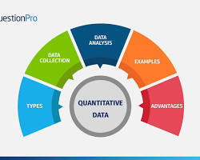
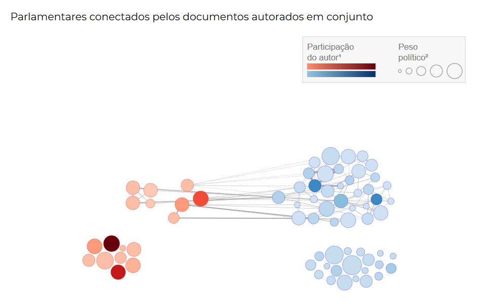
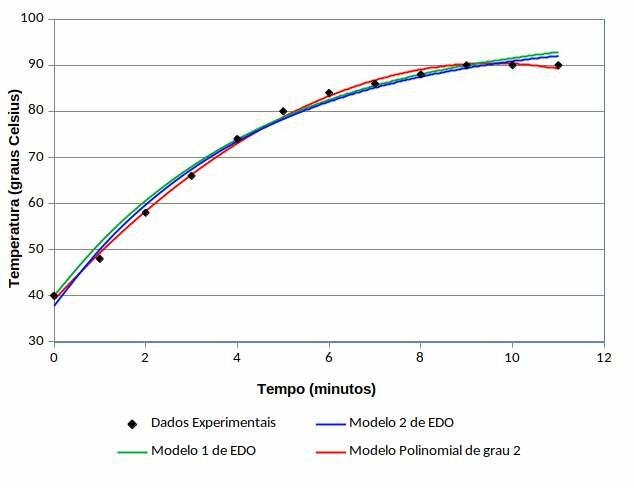
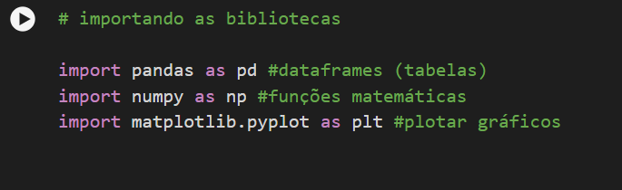
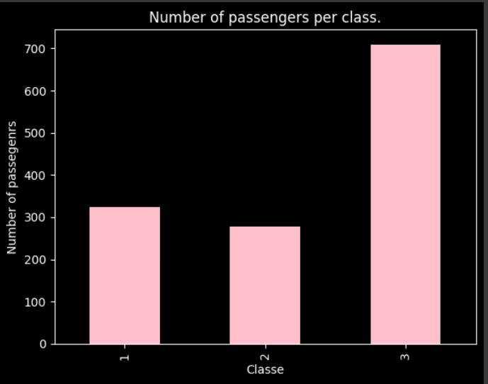

Dados qualitativos: Retrate qualidades não numéricas (por exemplo, núcleos, opiniões, categorias).
Dados quantitativos: representam valores numéricos como vendas, temperatura ou tempo.
Dados discretos: assuma valores diferentes e contáveis, como o número de pessoas ou páginas de um livro.
Dados contínuos: podem assumir qualquer valor dentro de um intervalo como altura ou peso.
Para cálculos numéricos básicos e manipulação de arrays multidimensionais, NumPy é a ferramenta ideal. Por outro lado, se você está lidando com dados tabulares e precisa realizar análises exploratórias, o Pandas é a escolha recomendada. Para quem busca construir modelos de aprendizado de máquina usando algoritmos pré-existentes, o Scikit-learn é a escolha ideal. No entanto, se o objetivo é criar modelos personalizados de aprendizado de máquina profundo, o TensorFlow é a plataforma recomendada.
A utilização de gráficos e dashboards interativos é um meio eficaz de representar visualmente os dados, permitindo o exame das informações de forma dinâmica e cativante. Neste artigo, fornecerei uma visão geral dos princípios fundamentais, software amplamente utilizado e as etapas iniciais para embarcar na criação de gráficos e painéis interativos.
